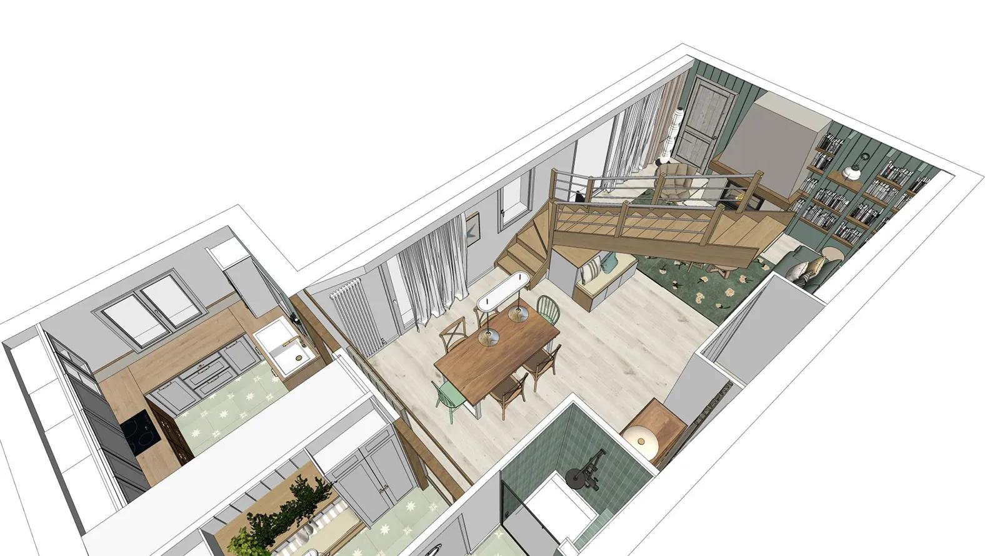

Chaque projet résout un problème différent

À propos
Spécialisé dans la rénovation, la conception et l'aménagement de vos espaces de vie et de travail, j'accompagne particuliers et professionnels dans la conception d'espaces haut de gamme, pensés sur mesure.
Installé à Redon, j'interviens plus largement dans le Pays de Redon, Morbihan et Loire-Atlantique notamment Vannes, Sarzeau, Muzillac, Guérande et Saint-Nazaire.
Mon rôle est de transformer une idée en un projet clair, structuré et maîtrisé, de la première esquisse jusqu'à la livraison finale. Pour que le résultat soit exactement celui que vous avez validé : un espace fonctionnel, fluide et pensé dans les moindres détails.
5 étapes pour transformer une idée floue en évidence

Lors de ce premier rendez-vous sur place, nous prenons le temps d’observer et de comprendre vos espaces : circulation, lumière, usage des pièces, contraintes techniques, potentiel esthétique…
Cette première rencontre nous permet de vérifier ensemble la faisabilité du projet, d’envisager les premières pistes d’aménagement selon vos envies et besoins et de définir une enveloppe budgétaire et un planning.
Je conçois pour vous un projet concret et personnalisé : plans d’aménagement optimisés, agencement structuré, vues 3D réalistes, vidéos immersives ... vous permettant de vous projeter dans votre futur espace avant même le début des travaux.
Chaque choix est pensé pour trouver l’équilibre entre esthétique, fonctionnalité et budget. Cette étape permet de figer les grandes orientations du projet, d’anticiper chaque détail et d’éviter les mauvaises surprises.


Je prends en charge les déclarations administratives nécessaires et vous guide dans les obligations réglementaires : déclaration préalable de travaux, permis de construire, demandes liées à la mise en conformité des ERP, réglementations de sécurité et d’accessibilité.
Je rédige l’ensemble des documents nécessaires : notices, plans, pièces administratives… afin de constituer un dossier clair, sécurisé et complet pour le dépôt.
Je sélectionne et vous présente les échantillons matériaux afin que vous puissiez voir, toucher, valider et ressentir l’ambiance complète du projet.
En collaboration avec des marques de qualité et haut de gamme, j'ai la possibilité de coordonner les achats et prendre en charge l'ensemble des commandes : mobilier, luminaires et accessoires décoratifs.
Je vous présente plusieurs références adaptées à votre projet en privilégiant la qualité, la durabilité et l'harmonie. Tout est livré directement chez vous, prêt à être installé et vécu.


Pour donner vie au projet, je vous mets en relation avec une équipe d'artisans locaux garantissant une réalisation conforme et dans les délais.
J’organise et supervise la préparation et le déroulement du chantier : analyse des devis avec optimisation budgétaire, planning d’exécution, réunions de chantier régulières et comptes rendus précis.
Chaque élément est coordonné pour garantir une exécution fluide et fidèle au projet initial imaginé ensemble.
Adaptées à vos besoins
Plans d'aménagement optimisés, modélisation 3D réaliste et immersive, création d'une ambiance singulière, sélection des matériaux, des couleurs, du mobilier et des luminaires adaptés à votre mode de vie.
Vous souhaitez déléguer et faire avancer votre projet sereinement : planning des travaux, coordination des intervenants, visites de chantier régulières et comptes rendus réguliers.
Vous voulez un intérieur cohérent, abouti et qui a du caractère.
Je vous accompagne pour faire les bons choix dans la conception de votre projet.
Structure de la phase travaux, sans pilotage de chantier.
Je vous accompagne sur place dans les RV artisans et la relecture des devis.
Vous souhaitez déléguer et faire avancer votre projet sereinement.
En complément de la mission conception + plans :
Votre projet nécessite une autorisation administrative ?
Je constitue et dépose en mairie un dossier clair et conforme.
Variable selon projet
à partir de 1400€ - variable selon le projetAvis clients

Nous avons fait appel à Mr Cousseau dans le cadre des démarches de notre projet locatif.
Nous sommes très satisfaits de sa prestation. Il aura été de bons conseils sur le projet, les visuels étaient très pro et nous ont permis de nous projeter facilement en terme d'aménagement et de décoration.
Il a suivi au plus près le dossier auprès du service urbanisme et à été très réactif quand il a fallu effectuer des modifications afin de faire en sorte que celui-ci aboutisse rapidement.
Je recommande vivement.
Nous avons fait appel à Alexandre pour le projet d’aménagement et de rénovation de notre maison, située sur la commune de Plescop.
Il a tout de suite compris le style que nous souhaitions et nous a proposé des plans et des visuels magnifiques, avec de très bonnes idées et conseils.
Bien que sa prestation soit terminée, il reste malgré tout à notre écoute en cas de besoin, et nous accompagne jusqu’au bout du projet. Maintenant, nous avons hâte que notre projet voie le jour.
Vous pouvez lui faire confiance les yeux fermés. Merci Alexandre !
Un grand merci à Alexandre pour son excellent travail sur notre projet de réagencement intérieur de notre maison.
Les idées d'aménagement et la qualité des visuels 3D nous ont permis de nous projeter à 100%.
Bravo et merci!
Vous avez un projet de rénovation ou d'aménagement autour de Saint-Nazaire ou la Presqu'île ?